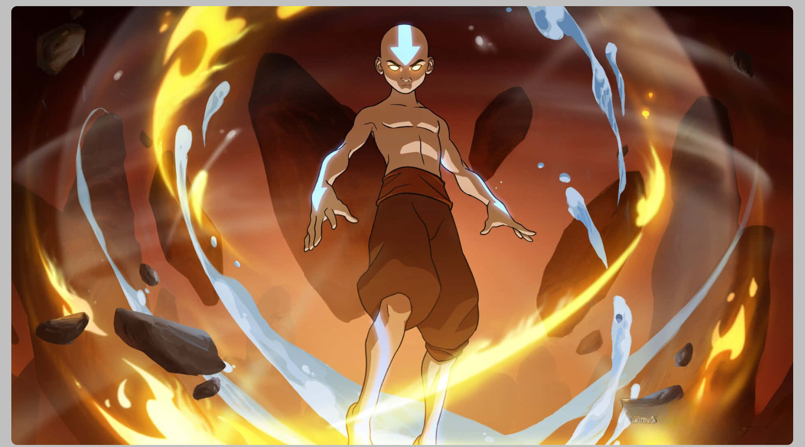

Interactive Image Gallery
This project is an interactive image gallery based off Avatar The Last Airbender. I used my knowledge of HTML , CSS and jQuery. I was able to create a slideshow that would cycle through 6 photos of different Avatar based characters. I set a timer of 4 seconds to rotate through the photos.
Avatar The Last AirbenderPersonal Portfolio -Homepage

This project is a personal portfolio homepage. I used my knowledge of HTML , CSS and jQuery. I was able to create a homepage that would showcase my skills and projects.
Personal Portfolio - HomepagejQuery Events-Chaining

This project was made using HTML , CSS and jQuery. I was able to use jQuery for animations such as the hiding and fading transititons.
jQuery Events-Chaining